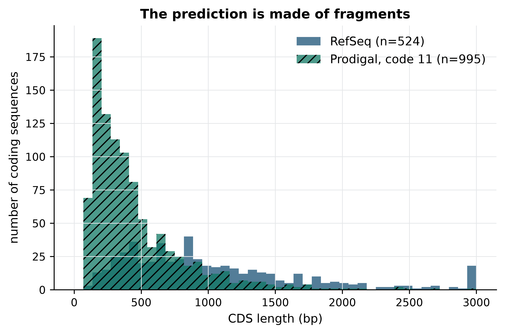
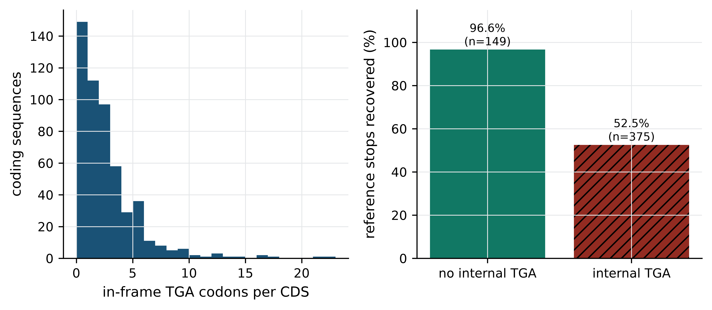
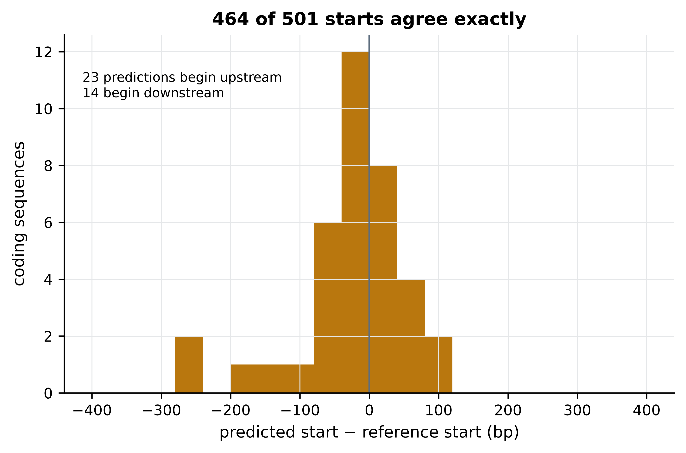
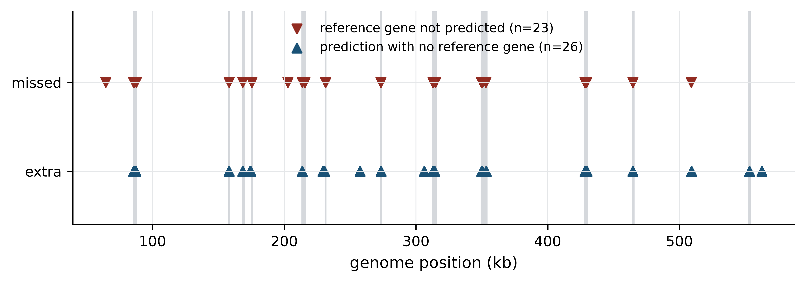

import sys; sys.path.insert(0, "..")
from pybfx import book_data, style
style()
import tempfile, shutil
from pathlib import Path
work = Path(tempfile.mkdtemp(prefix="mgen-"))
if shutil.which("prodigal") is None:
raise RuntimeError("prodigal is not on PATH; create the book environment from environment.yml")
print(f"scratch directory: {work}")
#> scratch directory: /Users/umarahmad/.claude-science/orgs/2dbbb0cb-2805-4dbc-947b-19d18a9d3935/workspaces/e2774b04-77b6-40dd-b856-f7c7ffd027bd/.tmp/mgen-3t_vpuf_15 A complete project, start to finish
After working through this chapter you will be able to
- convert a vague interest into a question that a specific dataset can answer
- lay out a project directory so that raw data, code and derived results cannot be confused
- capture a software environment precisely enough that someone else can reproduce your numbers
- write a Makefile that rebuilds only the parts of an analysis that are out of date
- diagnose an analysis that has failed silently, by comparing its output against an independent annotation
- state what a result does not show, and defend that statement to a reviewer
Every previous chapter taught one technique against one dataset. A real project is not a sequence of techniques; it is a question, a set of decisions made under uncertainty, a pile of intermediate files, and an argument. This chapter is the capstone: you will carry out one complete analysis, from the first vague interest to a result you could defend, using the bundled Mycoplasmoides genitalium G37 genome (data/sequences/mycoplasma-genitalium-NC_000908.2.fasta) and its RefSeq annotation (data/annotation/mycoplasma-genitalium.gff).
The question is a practical one that anyone who annotates a new genome faces. Ab initio gene prediction — finding genes from sequence composition alone, with no homology evidence — is fast and free, whereas curated annotation is slow and expensive. So: how much of a curated bacterial annotation does an ab initio predictor actually recover, and where it disagrees, which method is wrong? M. genitalium is the right organism to ask it of, because at 580 kb with around 500 protein-coding genes it is one of the smallest self-replicating genomes known (Fraser et al. 1995), and because it contains a trap that will cause the first analysis in this chapter to fail. That failure is the most useful part of the chapter and it is left in deliberately.
What you will build along the way matters as much as the answer. A project directory whose structure makes mistakes visible. An environment file that pins the software. A Git history whose messages explain decisions rather than describing diffs. A Makefile that regenerates every result from the raw data with one command. These are the difference between an analysis that survives peer review and a folder of scripts that nobody, including you, can rerun in six months. The chapter ends with the write-up: the figures, the methods section, the availability statements, and a reviewer-style self-check you can apply to your own work before someone else applies a harsher version of it.
15.1 Setting up
The analysis needs only the bundled genome, the bundled annotation and Prodigal, which is pinned in the book’s environment.yml. Intermediate files are written to a scratch directory so that rendering the book leaves nothing behind; in the real project they would go to results/, as described in Section 15.3.
15.2 From interest to answerable question
“I am interested in bacterial genome annotation” is not a project. It names a field, not a question, and it cannot be finished. Turning an interest into something answerable means forcing four things to be specific.
A comparison. Almost every answerable question is a comparison: this against that, before against after, predicted against observed. An interest becomes a question when you can name the two things being compared. Here, they are an ab initio prediction and a curated reference annotation of the same genome.
A measurable quantity. The comparison has to produce a number. “How well does prediction agree with curation?” needs an operational definition of agreement, and choosing it is a scientific decision, not a formality. Two annotations of the same gene often share a stop codon but disagree about where translation starts, because the 3’ end of an open reading frame is determined by the first in-frame stop whereas the 5’ end depends on ribosome binding site models. So we will score agreement on the stop coordinate and strand, and treat the start separately. Had we scored exact coordinate identity, we would have measured mostly start-site prediction and called it annotation accuracy.
A dataset that can settle it. The question must be answerable with data you can actually obtain. Here both annotations exist for the same assembly, which is the whole reason this comparison is cheap.
A statement of what would count as an answer. Write it down before running anything: “Prodigal recovers X% of RefSeq coding sequences by stop coordinate and predicts Y% more; the disagreements fall into these classes, for these reasons.” A pre-written answer template is the cheapest protection against the habit of running analyses until something looks interesting.
Write the abstract first
Before the first command, write the 150-word abstract of the paper you hope to produce, with the numbers left as blanks. It takes twenty minutes and it exposes immediately whether the project has a result at all, whether the result would interest anyone, and which numbers you actually need. If you cannot write the blanks, the question is not yet a question.
15.3 Project structure and version control
A project directory is a safety mechanism. Its job is to make certain mistakes impossible: overwriting raw data, mistaking a derived file for a primary one, or publishing a figure that no longer matches the code that made it. The layout below is the one used for this analysis and is close to the convention set out by Wilson et al. (2017) and Noble (2009).
The directory listing was produced by running find in the project after it was built; everything in it is real.
mgen-annotation/
├── .gitignore
├── Makefile
├── environment.yml
├── data/
│ └── raw/ # read-only inputs: genome.fasta, refseq.gff
├── doc/ # manuscript, notes, decisions
├── figures/ # generated; never edited by hand
├── results/ # generated; never edited by hand
└── src/
├── 01_predict_genes.sh
├── 02_compare_annotations.py
└── 03_make_figures.pyThree rules make the structure work. First, data/raw/ is read-only: after copying the genome and annotation in, run chmod a-w data/raw/*, so that a careless redirection cannot destroy the one thing you cannot regenerate. Second, everything outside data/raw/ and src/ is disposable: results/ and figures/ must be reconstructible by running the pipeline, which means make clean && make is a test of the project’s integrity, not a destructive act. Third, scripts are numbered in execution order, which documents the pipeline before any workflow manager is involved.
What to commit and what never to commit
Git tracks text well and binary data badly. The practical rule is to commit everything a stranger needs to regenerate the results, and nothing that the pipeline itself produces. The .gitignore for this project is four lines of intent:
results/
figures/
data/raw/
__pycache__/Raw data is excluded not because it is unimportant but because it is large, immutable and already archived under a RefSeq accession, which is a better citation than a copy in your repository. What gets committed instead is the code that fetches it and the checksum that identifies it. Never commit credentials, participant identifiers, or any file under controlled access — a Git history is forever, and git rm does not remove a file from previous commits.
Running git ls-files in the finished project gives exactly six tracked files:
.gitignore
Makefile
environment.yml
src/01_predict_genes.sh
src/02_compare_annotations.py
src/03_make_figures.pyCommit messages that are worth reading
A commit message explains why, because the what is already in the diff. Compare “fixed script” with the message from the second commit of this project, reproduced from git log:
Record why gene prediction runs under genetic code 4
Prodigal defaults to table 11, which treats TGA as a stop codon. In
Mycoplasma TGA encodes tryptophan, so the default fragments 72% of the
RefSeq coding sequences. Fixing the table raises stop-coordinate
sensitivity from 65.1% to 95.6%.That message answers, months later, a question the code cannot: why this parameter has an unusual value. The convention — a subject line under about 50 characters in the imperative mood, a blank line, then a body explaining the reasoning and quoting the numbers that justified it — costs a minute and repays it the first time a reviewer asks why.
Capturing the environment
A result that cannot be reproduced on another machine is a claim, not a finding, and the usual cause is software drift. Pin the environment in a file that lives in the repository:
name: mgen-annotation
channels: [conda-forge, bioconda]
dependencies:
- python=3.11.17
- prodigal=2.6.3
- biopython=1.88
- pandas=3.0.6
- numpy=2.4.6
- matplotlib=3.11.2Those are the versions this analysis actually ran under, read from the running interpreter and from prodigal -v. Pin to the patch version for the analysis software and record the channel, because Bioconda packages of the same tool differ in build and sometimes in default parameters (Grüning et al. 2018). Two habits strengthen this further: export the fully solved environment (conda env export > environment.lock.yml) at submission so the exact dependency graph is recoverable, and print the version of every tool into the log file the pipeline writes, so that a result file can be traced to the software that produced it even if it escapes the project directory.
A version range is not a pin
prodigal>=2.6 is not reproducibility. It tells a future reader that you did not know which version you used. The same applies to pip install -r requirements.txt without versions, to conda install prodigal, and to “latest” container tags. If the software has a version number, write it down.
15.4 Automating the pipeline with make
A numbered list of scripts is a workflow in the same sense that a shopping list is a meal. It tells you the order, but you must execute it, in that order, every time, without skipping a step or forgetting which steps are now stale. Three failures follow predictably: a figure regenerated from an old results file, a step rerun with changed parameters while downstream steps are not, and a colleague who cannot tell which script produced which file.
A workflow manager fixes this by recording dependencies rather than order. You declare that each output depends on certain inputs and on the command that produces it; the tool computes what is out of date and runs only that. make has been doing this since 1976, is installed everywhere, and is entirely sufficient for a project of this size. Snakemake (Köster and Rahmann 2012) and Nextflow (Di Tommaso et al. 2017) add wildcards over sample sheets, cluster submission and container integration, and are the right choice once a project has many samples or needs to run on a scheduler; the dependency idea is identical.
Here is the Makefile for this project, exactly as it was run:
# Analysis pipeline for the M. genitalium annotation comparison.
# `make` rebuilds only what is out of date; `make clean` removes derived files.
GENOME := data/raw/genome.fasta
REFSEQ := data/raw/refseq.gff
CODE := 4
all: results/comparison_code$(CODE).tsv figures/length_distribution.png
results/prodigal_code%.gff: $(GENOME) src/01_predict_genes.sh
mkdir -p results
src/01_predict_genes.sh $(GENOME) $@ $*
results/comparison_code%.tsv: results/prodigal_code%.gff $(REFSEQ) src/02_compare_annotations.py
python src/02_compare_annotations.py $(REFSEQ) $< $@
figures/length_distribution.png: results/prodigal_code$(CODE).gff $(REFSEQ) src/03_make_figures.py
mkdir -p figures
python src/03_make_figures.py $(REFSEQ) $< $@
clean:
rm -rf results figures
.PHONY: all cleanFour features of that file do the work. The pattern rule results/prodigal_code%.gff generates a prediction for any genetic code, so asking for results/comparison_code11.tsv runs the whole chain under code 11 without editing anything — which is exactly how the dead end in Section 15.6 was investigated. The automatic variables $@ (the target) and $< (the first prerequisite) keep filenames in one place. Listing the script itself as a prerequisite means editing the comparison code invalidates the comparison, which is the single most commonly forgotten dependency. And clean plus .PHONY make the integrity test above a one-liner.
Running it from a clean checkout produces this, copied from the terminal:
mkdir -p results
src/01_predict_genes.sh data/raw/genome.fasta results/prodigal_code4.gff 4
python src/02_compare_annotations.py data/raw/refseq.gff results/prodigal_code4.gff results/comparison_code4.tsv
reference_cds predicted_cds shared_stops sensitivity precision
524 527 501 0.956107 0.950664
mkdir -p figures
python src/03_make_figures.py data/raw/refseq.gff results/prodigal_code4.gff figures/length_distribution.pngand running make a second time, with nothing changed, prints make: Nothing to be done for 'all'. That second run is the point of the exercise: the pipeline knows it is up to date.
Make needs real tabs
Recipe lines in a Makefile must begin with a tab character, not spaces. An editor that silently expands tabs produces the error Makefile:10: *** missing separator. Stop., which is the single most common reason beginners abandon make. Configure your editor to preserve tabs in Makefiles before you write one.
15.5 Establishing the baseline
Before comparing anything, characterise the reference. Most annotation errors are caught by the sanity checks you run on the inputs, not by the clever analysis afterwards. Begin by loading the genome and counting the feature types in the RefSeq GFF3 file.
import pandas as pd
import numpy as np
from Bio import SeqIO
genome = SeqIO.read(book_data("sequences", "mycoplasma-genitalium-NC_000908.2.fasta"), "fasta")
print(f"{genome.id}: {len(genome.seq):,} bp, "
f"GC {100 * (genome.seq.count('G') + genome.seq.count('C')) / len(genome.seq):.1f}%")
#> NC_000908.2: 580,076 bp, GC 31.7%
GFF_COLUMNS = ["seqid", "source", "type", "start", "end",
"score", "strand", "phase", "attributes"]
annotation = pd.read_csv(book_data("annotation", "mycoplasma-genitalium.gff"),
sep="\t", comment="#", names=GFF_COLUMNS)
print(annotation["type"].value_counts().head(8).to_string())
#> type
#> gene 546
#> CDS 524
#> exon 42
#> tRNA 36
#> pseudogene 20
#> rRNA 3
#> region 1
#> SRP_RNA 1The genome is 580,076 bp at 31.7% GC, and the annotation carries 524 coding sequences (CDS), 36 transfer RNA (tRNA) genes, three ribosomal RNA (rRNA) genes and 20 pseudogenes. Two of those numbers are worth pausing on. A GC content near 32% is low, which matters because gene finders trained on GC-rich genomes mis-model codon composition at this extreme. And 524 protein-coding genes in 580 kb implies that coding sequence occupies almost the whole genome — a prediction we can check directly.
def cds_table(frame):
"""The CDS rows of a GFF table, with length and 3' stop coordinate added."""
cds = frame[frame["type"] == "CDS"].copy()
cds["length"] = cds["end"] - cds["start"] + 1
cds["stop_key"] = list(zip(np.where(cds["strand"] == "+", cds["end"], cds["start"]),
cds["strand"]))
return cds.reset_index(drop=True)
def coding_density(cds, genome_length):
"""Percentage of the genome covered by at least one CDS, merging overlaps."""
covered, current = 0, None
for start, end in sorted(zip(cds["start"], cds["end"])):
if current is None:
current = [start, end]
elif start <= current[1]:
current[1] = max(current[1], end)
else:
covered += current[1] - current[0] + 1
current = [start, end]
return 100 * (covered + current[1] - current[0] + 1) / genome_length
reference_cds = cds_table(annotation)
print(f"reference: {len(reference_cds)} CDS, median length "
f"{int(reference_cds['length'].median())} bp, "
f"coding density {coding_density(reference_cds, len(genome.seq)):.1f}%")
#> reference: 524 CDS, median length 856 bp, coding density 94.6%A coding density of 94.6% confirms the picture: M. genitalium has shed almost everything that is not a gene, which is why it is used as a model of a minimal genome. This baseline is also a diagnostic for what follows — any prediction whose coding density is far below 94% has lost genes.
15.6 The first run and its diagnosis
Prodigal (Hyatt et al. 2010) predicts protein-coding genes from sequence alone, using a dynamic programming scan over open reading frames scored by a model of codon usage and ribosome binding sites learned from the genome itself. On a genome this size it runs in under a second. The obvious first command is the one with no special options.
import subprocess
def run_prodigal(genome_path, output_gff, genetic_code):
"""Predict genes with Prodigal in single-genome mode under a given code."""
subprocess.run(["prodigal", "-i", str(genome_path), "-o", str(output_gff),
"-f", "gff", "-p", "single", "-g", str(genetic_code), "-q"],
check=True)
return pd.read_csv(output_gff, sep="\t", comment="#", names=GFF_COLUMNS)
genome_path = book_data("sequences", "mycoplasma-genitalium-NC_000908.2.fasta")
code11 = cds_table(run_prodigal(genome_path, work / "code11.gff", 11))
print(f"genetic code 11: {len(code11)} CDS predicted "
f"(reference has {len(reference_cds)})")
#> genetic code 11: 995 CDS predicted (reference has 524)Prodigal predicts 995 coding sequences where the reference has 524 — nearly twice as many. A beginner’s first instinct is that the predictor is over-calling, which is a known behaviour of ab initio methods in GC-poor genomes, and the temptation is to filter the predictions by length and move on. Resist it, because an error of this size is not noise. Figure 15.1 shows where the extra genes came from.
import matplotlib.pyplot as plt
bins = np.linspace(0, 3000, 45)
fig, ax = plt.subplots()
ax.hist(reference_cds["length"].clip(upper=3000), bins=bins,
alpha=0.75, label=f"RefSeq (n={len(reference_cds)})")
ax.hist(code11["length"].clip(upper=3000), bins=bins, alpha=0.75,
hatch="///", label=f"Prodigal, code 11 (n={len(code11)})")
ax.set_xlabel("CDS length (bp)"); ax.set_ylabel("number of coding sequences")
ax.set_title("The prediction is made of fragments")
ax.legend()
fig.tight_layout()
The median predicted length is 336 bp against 856 bp in the reference, and the excess is concentrated below 400 bp. Genes are not being invented; they are being cut up. A gene cut into pieces has a false 3’ end at every cut, which means the diagnosis can be made quantitatively by asking how many reference stop coordinates the prediction reproduces.
def compare(reference, predicted):
"""Agreement between two CDS tables on 3' stop coordinate and strand."""
shared = set(reference["stop_key"]) & set(predicted["stop_key"])
return {
"predicted": len(predicted),
"shared stops": len(shared),
"sensitivity (%)": round(100 * len(shared) / len(reference), 1),
"precision (%)": round(100 * len(shared) / len(predicted), 1),
"median length (bp)": int(predicted["length"].median()),
"coding density (%)": round(coding_density(predicted, len(genome.seq)), 1),
}
print(compare(reference_cds, code11))
#> {'predicted': 995, 'shared stops': 341, 'sensitivity (%)': 65.1, 'precision (%)': 34.3, 'median length (bp)': 336, 'coding density (%)': 77.1}Two-thirds of the reference stops are found, but only a third of the predictions correspond to a real gene end, and the coding density has collapsed from 94.6% to 77.1%. A fragmentation hypothesis explains all three numbers at once: if genes are broken internally, the true stop at the end of each gene is usually still predicted, every break adds a spurious stop, and the gaps between fragments remove sequence from the coding total.
What breaks an open reading frame internally is a stop codon. So the question becomes: does this genome use the standard bacterial stop codons at all? It does not. Mycoplasma and its relatives use genetic code 4, in which TGA encodes tryptophan rather than termination — a well-documented deviation, and the reason the NCBI annotation pipeline records a translation table for every genome it annotates (Tatusova et al. 2016). Prodigal’s default is code 11, the bacterial standard. Counting in-frame TGA codons in the reference coding sequences settles it.
def internal_tga_count(row, sequence):
"""Number of in-frame TGA codons strictly inside a CDS."""
span = sequence[row.start - 1:row.end]
if row.strand == "-":
span = span.reverse_complement()
return sum(str(span[i:i + 3]) == "TGA" for i in range(0, len(span) - 3, 3))
reference_cds["internal_tga"] = [internal_tga_count(row, genome.seq)
for row in reference_cds.itertuples()]
with_tga = reference_cds["internal_tga"] > 0
print(f"{with_tga.sum()} of {len(reference_cds)} reference CDS ({100 * with_tga.mean():.1f}%) "
f"contain at least one in-frame TGA")
#> 375 of 524 reference CDS (71.6%) contain at least one in-frame TGA
print(f"{reference_cds['internal_tga'].sum():,} in-frame TGA codons in total, "
f"up to {reference_cds['internal_tga'].max()} in a single gene")
#> 1,178 in-frame TGA codons in total, up to 22 in a single geneNearly three-quarters of the reference genes contain at least one codon that genetic code 11 reads as a stop, and one gene contains 22 of them. Figure 15.2 confirms that this, and not some property of short genes, is what determined which genes the first run recovered.
recovered = reference_cds["stop_key"].isin(set(code11["stop_key"]))
rates = [100 * recovered[~with_tga].mean(), 100 * recovered[with_tga].mean()]
counts = [(~with_tga).sum(), with_tga.sum()]
fig, (ax1, ax2) = plt.subplots(1, 2, figsize=(7.2, 3.2))
ax1.hist(reference_cds["internal_tga"], bins=range(0, 24), color="#1A5276")
ax1.set_xlabel("in-frame TGA codons per CDS"); ax1.set_ylabel("coding sequences")
bars = ax2.bar(["no internal TGA", "internal TGA"], rates,
color=["#117864", "#922B21"], hatch=["", "///"])
for bar, rate, n in zip(bars, rates, counts):
ax2.text(bar.get_x() + bar.get_width() / 2, rate + 2,
f"{rate:.1f}%\n(n={n})", ha="center", fontsize=8)
ax2.set_ylim(0, 115); ax2.set_ylabel("reference stops recovered (%)")
fig.tight_layout()
The split is unambiguous: 96.6% of the 149 TGA-free genes are recovered against 52.5% of the 375 genes containing at least one internal TGA. The first analysis did not fail because Prodigal is a poor predictor; it failed because it was asked the wrong question about this genome. That is the characteristic shape of a silent analytical failure — the tool runs, exits zero, produces well-formed output, and is wrong.
A clean exit code is not a result
Nothing about the first run looked broken. Prodigal exited zero in under a second and wrote valid GFF3 with plausible gene models. The error was visible only against an independent annotation and a length distribution. Build at least one such external check into every pipeline you write — a count you can predict, a distribution you have seen before, a subset with a known answer — because the failures that cost months are the ones that do not raise an exception.
15.7 Measuring agreement under the right genetic code
With the diagnosis made, the fix is one flag. Because the Makefile parameterises the genetic code as a pattern, obtaining the corrected result in the real project needed no code edits at all — only make results/comparison_code4.tsv.
code4 = cds_table(run_prodigal(genome_path, work / "code4.gff", 4))
summary = pd.DataFrame({"genetic code 11": compare(reference_cds, code11),
"genetic code 4": compare(reference_cds, code4)})
summary
#> genetic code 11 genetic code 4
#> predicted 995.0 527.0
#> shared stops 341.0 501.0
#> sensitivity (%) 65.1 95.6
#> precision (%) 34.3 95.1
#> median length (bp) 336.0 855.0
#> coding density (%) 77.1 94.8Table 15.1 is the project’s central result. Under the correct genetic code, Prodigal recovers 95.6% of reference coding sequences and 95.1% of its predictions correspond to a reference gene end; median length and coding density both match the reference almost exactly. Sensitivity rose by 30 percentage points and precision by 61 from a single parameter.
Stop coordinates are the easy part. Start codons are chosen by a ribosome binding site model and are the known weak point of ab initio prediction, so they deserve their own measurement. Among the genes where both methods agree on the stop, we can ask how often they also agree on where translation begins.
def start_positions(cds):
return {key: (start if strand == "+" else end)
for key, start, end, strand in zip(cds["stop_key"], cds["start"],
cds["end"], cds["strand"])}
reference_starts, predicted_starts = start_positions(reference_cds), start_positions(code4)
shared_keys = sorted(set(reference_starts) & set(predicted_starts))
offsets = np.array([predicted_starts[key] - reference_starts[key] for key in shared_keys])
identical = int((offsets == 0).sum())
print(f"{identical} of {len(shared_keys)} shared genes ({100 * identical / len(shared_keys):.1f}%) "
f"have identical start coordinates")
#> 464 of 501 shared genes (92.6%) have identical start coordinates
print(f"of the {len(shared_keys) - identical} that differ, median absolute offset "
f"{int(np.median(np.abs(offsets[offsets != 0])))} bp")
#> of the 37 that differ, median absolute offset 39 bpAgreement on the start is 92.6%, and Figure 15.3 shows that the disagreements are not random noise but a systematic bias in one direction.
differing = offsets[offsets != 0]
fig, ax = plt.subplots()
ax.hist(np.clip(differing, -400, 400), bins=np.arange(-400, 420, 40), color="#B9770E")
ax.axvline(0, color="#5D6D7E", linewidth=1)
ax.set_xlabel("predicted start − reference start (bp)")
ax.set_ylabel("coding sequences")
ax.set_title(f"{identical} of {len(shared_keys)} starts agree exactly")
ax.text(0.03, 0.9, f"{(differing < 0).sum()} predictions begin upstream\n"
f"{(differing > 0).sum()} begin downstream",
transform=ax.transAxes, fontsize=8, va="top")
fig.tight_layout()
Most disagreements place the predicted start upstream of the curated one, which is what the method’s incentives predict: an ab initio scan rewards the longest open reading frame consistent with its ribosome binding site model, whereas curators prefer the start supported by homologous proteins. The practical consequence is that ab initio protein sequences carry occasional spurious N-terminal extensions, which matters for peptide-level work and barely at all for counting genes or assigning functions.
15.8 Where the two methods disagree
Aggregate agreement of 95% is where a careless project would stop. The remaining 5% is where the biology is, and characterising it is what distinguishes an analysis from a benchmark. There are 23 reference genes with no matching prediction and 26 predictions with no matching reference gene; the first question is whether these are the same loci seen twice.
missed = reference_cds[~reference_cds["stop_key"].isin(set(code4["stop_key"]))].copy()
extra = code4[~code4["stop_key"].isin(set(reference_cds["stop_key"]))].copy()
def overlapping_rows(row, other):
"""Rows of `other` on the same strand whose span overlaps this row."""
return other[(other["strand"] == row.strand) & (other["start"] <= row.end)
& (row.start <= other["end"])]
missed["has_overlap"] = [len(overlapping_rows(row, code4)) > 0 for row in missed.itertuples()]
print(f"{len(missed)} reference genes unmatched, of which "
f"{int(missed['has_overlap'].sum())} overlap a prediction with a different stop")
#> 23 reference genes unmatched, of which 20 overlap a prediction with a different stop
print(f"{len(extra)} unmatched predictions, median length "
f"{int(extra['length'].median())} bp")
#> 26 unmatched predictions, median length 408 bpTwenty of the 23 unmatched reference genes overlap a prediction that disagrees only about the boundary, so they are not missed genes at all: both methods see a gene there and differ about where it ends. Only three reference genes are absent from the prediction entirely. Pulling out their annotated products tells us what they are.
import re
for row in missed[~missed["has_overlap"]].itertuples():
product = re.search(r"product=([^;]+)", row.attributes)
print(f" {row.start:>6}–{row.end:<6} {row.strand} {row.length:>4} bp "
f"{product.group(1) if product else 'unannotated'}")
#> 64367–64513 - 147 bp 50S ribosomal protein L33
#> 215654–215830 + 177 bp MgpC family cytadherence protein
#> 231431–231673 + 243 bp MgpC family cytadherence proteinOne of the three is 50S ribosomal protein L33, a genuine, essential, very short gene of 147 bp. Short coding sequences are the known blind spot of ab initio prediction: the statistical signal that distinguishes coding from non-coding sequence is weak in a window of 49 codons, and predictors set length thresholds to avoid drowning in false positives. The other two are fragments of the MgpC cytadherence protein family. Figure 15.4 shows that this is not a coincidence.
pseudogenes = annotation[annotation["type"] == "pseudogene"]
fig, ax = plt.subplots(figsize=(7.2, 2.6))
for start, end in zip(pseudogenes["start"], pseudogenes["end"]):
ax.axvspan(start / 1000, end / 1000, color="#D5D8DC", zorder=0)
ax.scatter(missed["start"] / 1000, np.full(len(missed), 1), marker="v",
color="#922B21", label=f"reference gene not predicted (n={len(missed)})")
ax.scatter(extra["start"] / 1000, np.zeros(len(extra)), marker="^",
color="#1A5276", label=f"prediction with no reference gene (n={len(extra)})")
ax.set_yticks([0, 1]); ax.set_yticklabels(["extra", "missed"])
ax.set_xlabel("genome position (kb)"); ax.set_ylim(-0.6, 1.8)
#> Text(0.5, 0, 'genome position (kb)')
#> (-0.6, 1.8)
ax.legend(loc="upper center", fontsize=8, ncol=1)
fig.tight_layout()
The disagreements cluster, and they cluster on the grey bands. Of the 26 unmatched predictions, 19 overlap one of the 20 loci that RefSeq annotates as pseudogenes, and the unmatched reference genes carry products named adhesin P1, adhesin P110 and MgpC cytadherence protein. These are the MgPa adhesin gene family (Fraser et al. 1995): a set of repeated, recombining sequences that M. genitalium uses for antigenic variation, present in the genome as a functional operon plus multiple partial copies. In a repeat family of this kind the question “where does the gene end?” has no single answer, because the locus is a mosaic of complete and degenerate copies. RefSeq resolves it with homology evidence and curator judgement; Prodigal resolves it with a composition model; and they resolve it differently.
That is the project’s second result, and it is more interesting than the first. The 95% figure is not a uniform error rate of 5% spread across the genome. It is near-perfect agreement over the single-copy core and systematic disagreement in one repetitive, biologically unusual region, where the disagreement reflects genuine ambiguity rather than a mistake by either method.
15.9 Interpretation and limits
What the analysis shows: on a small, GC-poor, gene-dense bacterial genome analysed under the correct translation table, ab initio prediction reproduces the stop coordinates of 95.6% of curated coding sequences with 95.1% precision and identical start codons for 92.6% of the genes it recovers; its failures are concentrated in very short genes and in a repeat-expanded surface antigen family; and the single most consequential parameter is the genetic code, which moved sensitivity by 30 percentage points.
What it does not show is longer, and stating it is not modesty but method. A reader cannot use a result whose scope is undeclared.
- It is one genome. Every number here is a property of M. genitalium G37. A GC-rich actinobacterium, an organism with introns, or a draft assembly in 300 contigs will behave differently, and nothing above licenses a general claim about ab initio prediction. Benchmarking would need a panel of genomes spanning GC content, assembly contiguity and taxonomic breadth.
- The reference is not truth. RefSeq annotation is itself partly computational — the NCBI pipeline uses a gene finder and then applies homology and curation (Tatusova et al. 2016) — so this is agreement between two methods that share assumptions, not accuracy against a gold standard. Only experimentally determined gene boundaries, from ribosome profiling or proteomics, would support the word “accuracy”, and the disagreements in the MgPa region are exactly where the reference is least certain.
- Agreement was defined on stop coordinates. That choice was deliberate and it shapes the headline figure. Scoring exact coordinate identity would have reported about 88% rather than 95.6%; scoring any overlap would have reported higher still. The metric is part of the result, which is why it must be in the abstract and not buried in the methods.
- Nothing here is about function. Recovering a gene’s coordinates says nothing about whether its product is correctly identified. Functional annotation is a separate pipeline — protein similarity search (Altschul et al. 1990), profile hidden Markov models against domain libraries (Eddy 2011; Mistry et al. 2020) — with its own and considerably higher error rate.
- No statistical uncertainty is attached. With one genome there is no replication, so no confidence interval is available for any of these percentages. Resampling genes would measure sampling variation within this genome, not variation between genomes, and would be a misleading thing to report.
The honest one-sentence conclusion is therefore narrower than the one a press release would write: for compact bacterial genomes, ab initio prediction is an adequate substitute for curated annotation when the translation table is correct and the question concerns the gene complement rather than exact protein termini, and it should not be trusted in repeat families or for genes under about 150 bp.
Negative and boring results are results
“The default parameters give the wrong answer for this clade, and here is the diagnostic that reveals it” is a more useful finding than a confirmation that a tool works. It is also the kind of result most often left out of write-ups, because the dead end feels like evidence of incompetence. It is evidence of having checked.
15.10 Writing it up, and a reviewer’s self-check
A project that is not written up has not happened. Three parts of the write-up are specific to computational work.
Figures carry the argument. Each figure in this chapter answers one question: what went wrong (Figure 15.1), why (Figure 15.2), how well the corrected analysis performs (Figure 15.3 and Table 15.1), and where the residual disagreement lives (Figure 15.4). Before adding a figure, state in one sentence the claim it supports; if you cannot, the figure is decoration. Generate every figure from a script that reads the results files, never by hand from a spreadsheet, so that a corrected input regenerates a corrected figure — which is precisely what the figures/ rule in the Makefile guarantees.
A reproducible methods section names versions, parameters and data. The version of this analysis’s methods section would read: “Protein-coding genes were predicted with Prodigal 2.6.3 (Hyatt et al. 2010) in single-genome mode (-p single) under NCBI translation table 4 (-g 4) from the NC_000908.2 assembly, and compared with the RefSeq annotation of the same assembly (GCF_000027325.1) by 3’ coordinate and strand. Analysis code is in the accompanying repository; the environment is pinned in environment.yml.” Every element of that sentence is checkable: a version, a mode, a flag, two accessions and a pointer to code. A methods section that says “genes were predicted using standard parameters” is not reproducible, and reviewers increasingly say so.
Data and code availability statements are commitments. A usable statement names the archive, the accession and the licence for data, and the repository, the archived version identifier and the licence for code. Deposit code in a repository and archive it at a digital object identifier so that the version you describe cannot be silently rewritten. Note that FAIR does not require open: controlled-access human data is correctly described by naming the archive and the access procedure (Wilkinson et al. 2016), as discussed in the ethics chapter.
The self-check to apply before anyone else does
Run through this list before you submit. It is the list a competent reviewer works through, and every item has been violated by published papers.
-
Can a stranger regenerate every number? Clone the repository into a new directory, create the environment from the specification, run
make clean && make, and compare the output with the results in the manuscript. If it fails, the project is not finished. - Is every parameter in the paper? Including the defaults you did not change, since a default is a version-dependent choice. The genetic code in this project was a default, and it was wrong.
- Does the metric match the claim? If the claim is about accuracy, the metric must compare against something that can be called truth. This project’s metric supports a claim about agreement, and the abstract must say so.
- Is the comparison fair? Both annotations here derive from the same assembly, so no coordinate lift-over or assembly difference confounds the comparison. If your two datasets differ in reference build, read length, depth or batch, that difference is a rival explanation for your result.
- Have you looked at the disagreements individually? Aggregate statistics hide structure. Twenty minutes inspecting the 23 unmatched genes changed the interpretation of this project entirely.
- What is the sample size, and of what? One genome is n = 1 for claims about genomes, however many genes it contains. Pseudoreplication — treating 524 genes as 524 independent observations about annotation methods — is the most common statistical error in comparative genomics.
- Could the result be an artefact of the pipeline? Name the most plausible artefact explicitly and say what rules it out. Here, the most plausible was over-prediction in a GC-poor genome; the TGA analysis ruled it out.
- Is the raw data still bit-identical? Verify checksums against the manifest you recorded at the start. A silently corrupted or re-downloaded input invalidates everything downstream.
- Does the limitations paragraph exist, and is it specific? “Further work is needed” is not a limitation. Section 15.9 is the length a real one takes.
- Who is credited, and for what? Agree the contribution statement before submission, and cite the tools by their methods papers so that the people who wrote the software you depended on get the credit the citation system can measure.
15.11 Summary
- A project becomes tractable when the interest is narrowed to a comparison, a measurable quantity, a dataset that can settle it, and a written statement of what an answer would look like.
- The choice of metric is a scientific decision. Scoring annotation agreement on stop coordinates rather than exact coordinates measures gene detection rather than start-site prediction, and the choice belongs in the abstract.
- A project directory with read-only raw data, disposable derived directories and numbered scripts prevents a class of errors that no amount of care prevents otherwise.
- Commit code, configuration and provenance; never commit derived results, large inputs or anything under controlled access. Commit messages explain why, because the diff already shows what.
- Pin software to patch versions and channels. A version range documents that you did not know what you ran.
- A Makefile records dependencies rather than order, so that only stale results are rebuilt and editing a script invalidates its output.
make clean && makeis a test of whether a project is reproducible. - Silent analytical failure is the expensive kind: Prodigal exited zero, produced valid GFF3, and was wrong because the default translation table does not apply to Mycoplasma. Build an independent check into every pipeline.
- Aggregate agreement conceals structure. In this genome the residual 5% is not spread evenly but concentrated in very short genes and in the MgPa adhesin repeat family, where both methods face genuine ambiguity.
- Stating what a result does not show — one genome, a reference that is not truth, a metric that defines the headline number — is part of the result, not a concession.
15.12 Exercises
- Run Prodigal on the bundled genome under translation table 25 and compare the number of predicted coding sequences with the results for tables 4 and 11. Explain the direction of the difference from the stop codons each table defines.
- The comparison in this chapter scored agreement on the 3’ stop coordinate. Recompute sensitivity and precision for genetic code 4 using exact agreement on both coordinates and strand, and state how the headline figure changes.
- Compute the GC content of the 26 unmatched predictions and compare it with the genome-wide value. Does composition distinguish them from genes both methods agree on?
- The three reference genes that Prodigal missed entirely are short. Determine the length of the shortest coding sequence Prodigal did predict under code 4, and use it to estimate the effective length threshold of the method on this genome.
- Write a
makerule that producesresults/comparison_code25.tsvwithout editing any existing rule, and explain which feature of the Makefile makes this possible. - The reference annotation contains 20 pseudogenes. Write code to test whether reference coding sequences that overlap a pseudogene are recovered less often than those that do not, and report the two recovery rates.
- A colleague reports that an ab initio predictor “achieves 95% accuracy on bacterial genomes” and proposes to replace curated annotation with it in a 400-genome survey. Write the three questions you would ask before agreeing, drawn from Section 15.9.
- Take any analysis of your own and apply the ten-point self-check in Section 15.10. Report which items you cannot currently satisfy and what each would take to fix.
15.13 Solutions
Solutions
1. Table 25 reassigns TGA to glycine, so like table 4 it removes the stop codon that fragments Mycoplasma genes; the prediction count is therefore close to the table 4 result rather than the table 11 one. The remaining difference comes from the start-codon set and the retraining of the composition model.
code25 = cds_table(run_prodigal(genome_path, work / "code25.gff", 25))
for name, table in (("code 11", code11), ("code 4", code4), ("code 25", code25)):
print(f"{name}: {len(table)} CDS, median {int(table['length'].median())} bp")
#> code 11: 995 CDS, median 336 bp
#> code 4: 527 CDS, median 855 bp
#> code 25: 527 CDS, median 855 bp2. Exact agreement on both coordinates is stricter by the 37 genes whose starts differ, lowering sensitivity by about seven percentage points. The headline figure drops from 95.6% to roughly 88%, which is why the metric must be stated wherever the number is.
exact_reference = set(zip(reference_cds["start"], reference_cds["end"], reference_cds["strand"]))
exact_predicted = set(zip(code4["start"], code4["end"], code4["strand"]))
shared_exact = exact_reference & exact_predicted
print(f"exact-coordinate sensitivity {100 * len(shared_exact) / len(reference_cds):.1f}%, "
f"precision {100 * len(shared_exact) / len(code4):.1f}%")
#> exact-coordinate sensitivity 88.5%, precision 88.0%3. The unmatched predictions are close to the genome-wide composition, so GC content does not separate them; their distinguishing feature is position, not composition, as Figure 15.4 showed.
def gc_percent(row):
span = genome.seq[row.start - 1:row.end]
return 100 * (span.count("G") + span.count("C")) / len(span)
matched = code4[code4["stop_key"].isin(set(reference_cds["stop_key"]))]
print(f"unmatched predictions: {np.mean([gc_percent(r) for r in extra.itertuples()]):.1f}% GC")
#> unmatched predictions: 38.1% GC
print(f"matched predictions: {np.mean([gc_percent(r) for r in matched.itertuples()]):.1f}% GC")
#> matched predictions: 31.7% GC
print(f"whole genome: {100 * (genome.seq.count('G') + genome.seq.count('C')) / len(genome.seq):.1f}% GC")
#> whole genome: 31.7% GC4. The shortest prediction sets an empirical floor on what the method will report, and the missed 147 bp ribosomal protein gene sits below or near it.
print(f"shortest predicted CDS under code 4: {int(code4['length'].min())} bp")
#> shortest predicted CDS under code 4: 90 bp
print(f"reference CDS shorter than that: {int((reference_cds['length'] < code4['length'].min()).sum())}")
#> reference CDS shorter than that: 05. No new rule is needed for the prediction itself: the pattern rules results/prodigal_code%.gff and results/comparison_code%.tsv match any value of %, so make results/comparison_code25.tsv builds the whole chain. A pattern rule is a rule schema, which is why parameterising the pipeline rather than editing it is the habit worth forming; in Snakemake the same idea appears as wildcards.
6. Recovery is much lower for coding sequences overlapping a pseudogene locus, which is the MgPa repeat effect quantified.
pseudo_spans = list(zip(pseudogenes["start"], pseudogenes["end"]))
near_pseudogene = np.array([any(a <= row.end and row.start <= b for a, b in pseudo_spans)
for row in reference_cds.itertuples()])
found = reference_cds["stop_key"].isin(set(code4["stop_key"])).to_numpy()
print(f"overlapping a pseudogene: {100 * found[near_pseudogene].mean():.1f}% recovered "
f"(n={near_pseudogene.sum()})")
#> overlapping a pseudogene: 25.9% recovered (n=27)
print(f"elsewhere: {100 * found[~near_pseudogene].mean():.1f}% recovered "
f"(n={(~near_pseudogene).sum()})")
#> elsewhere: 99.4% recovered (n=497)7. Accuracy against what reference, measured by which metric, and on which genomes? Specifically: is the 95% agreement with a curated annotation that is itself partly computational, rather than accuracy against experimentally determined boundaries; was it scored on stop coordinates, exact coordinates or overlap; and was it measured on genomes resembling the 400 in the survey in GC content, assembly contiguity and translation table? A fourth question is worth adding: what does the survey need annotation for, since gene counting tolerates a 5% boundary error and protein terminus analysis does not.
8. No model answer; the value is in the items you cannot satisfy. The two that most often fail are the first — a clean clone does not reproduce the numbers, usually because a result was generated by a command run interactively and never written into a script — and the eighth, because checksums were never recorded at the start.
15.14 Further reading
- Hyatt et al. (2010) describes Prodigal’s algorithm, including the translation table handling that this chapter’s first run got wrong; the paper’s own benchmarking is a model of how to scope such a claim.
- Tatusova et al. (2016) documents the NCBI prokaryotic annotation pipeline that produced the reference used here, and is the right place to understand what “RefSeq annotation” actually involves.
- Seemann (2014) presents Prokka, which wraps Prodigal with functional annotation and is the usual next step after this chapter’s analysis.
- Köster and Rahmann (2012) introduces Snakemake, the natural successor to the Makefile once a project has samples rather than a single genome.
- Wilson et al. (2017) is the most practical available statement of project organisation, and its advice on read-only raw data and disposable derived directories is the backbone of Section 15.3.
- Sandve et al. (2013) gives ten rules for reproducible computational research; read it as a checklist alongside Section 15.10.
- Manni et al. (2021) describes BUSCO, the standard completeness check for a new assembly or annotation, and the obvious external validation to add to a project like this one.